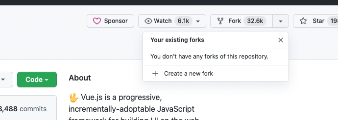
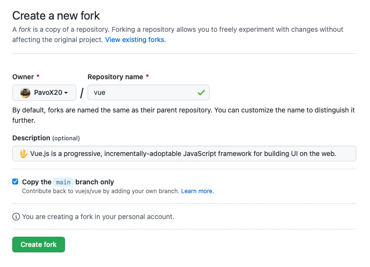
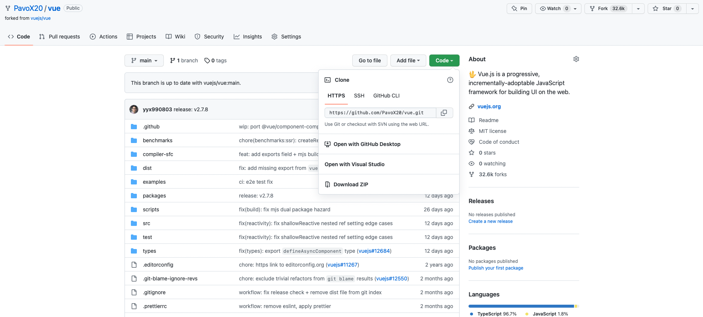
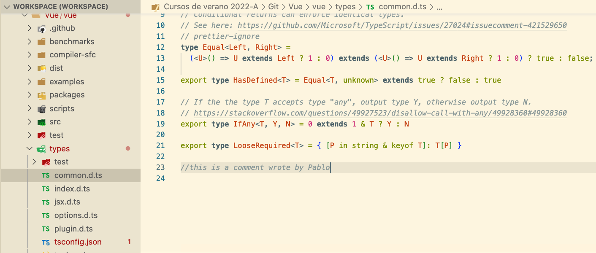
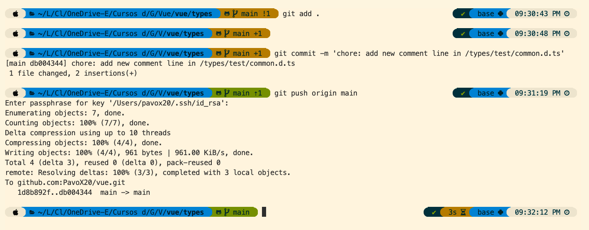
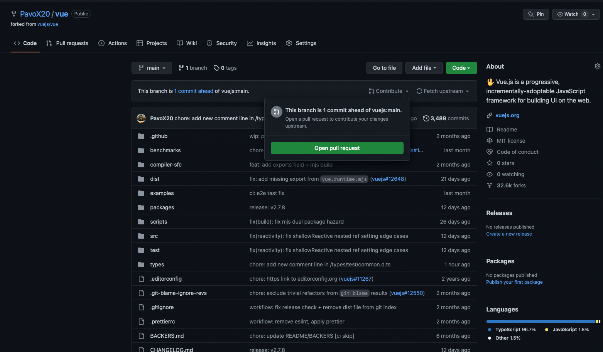
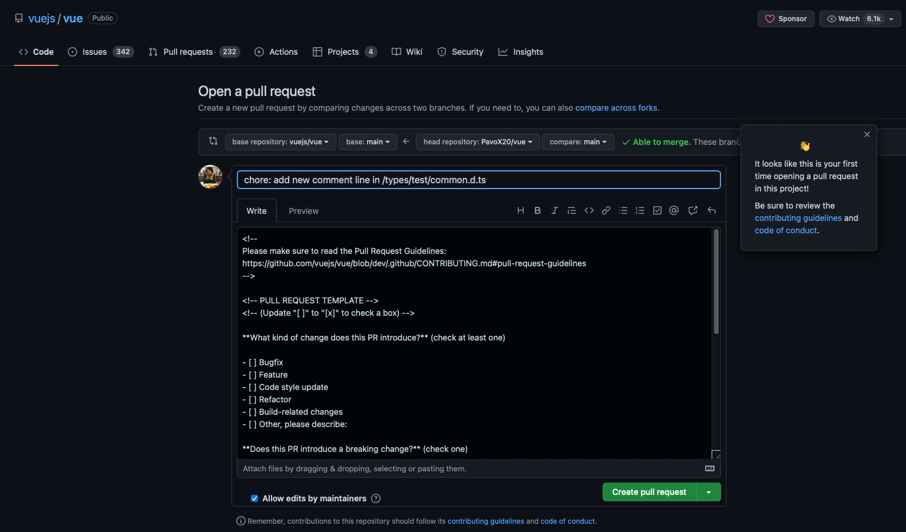
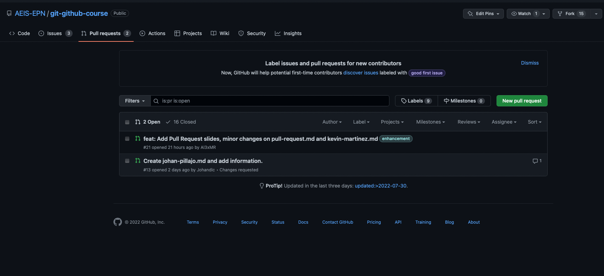
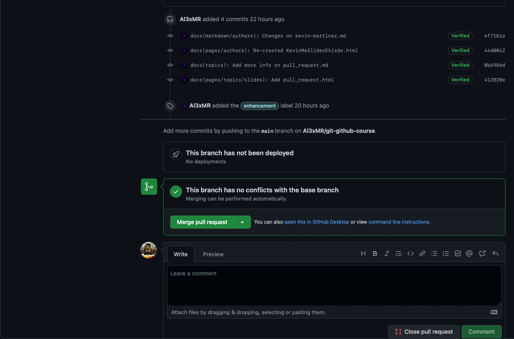

### How to contribute to a external proyect? <p> If you want to contribute to a project and make it better, your help is very welcome. Contributing is also a great way to learn more about social coding on Github, new technologies and and their ecosystems and how to make constructive, helpful bug reports, feature requests and the noblest of all contributions: a good, clean pull request. </p> Look for project's contributions instruction below (in this case we are trying to contribute to Vue.js project 👀): <h1 align="center"> <img src="Images/vue.png" alt="Vue" width="325px"> </h1> --- **1. Create a personal fork of the project on Github** <p> First of all, what is a fork? A fork is a copy of a repository that you manage. Forks let you make changes to a project without affecting the original repository. You can fetch updates from or submit changes to the original repository with pull requests. In order to make a fork we need to create a folder in our machine where the project will be located. With you UNIX terminal go to this new folder. In GitHub go to the github project you'd like to contribute. Select Fork --> Create a new fork <h1 align="center">  </h1> --- And then Create fork. <h1 align="center">  </h1> At this instance if you go to your repositories you can see the project you forked. --- **2. Clone the fork on your local machine** On you own repository select Code and copy the http link <h1 align="center">  </h1> Type in a UNIX terminal (over the folder you created before): ```git clone url-of-the-repository```. (Example: ``` git clone https://github.com/pavox20/vue.git ```) Note*: If you know about ssh or GitHub CLI you can make a clone by using the other urls. Note**: If you created your fork a while ago be sure to pull upstream changes into your local repository. To do this type the command: ```git pull origin <branch>``` e.g.: ```git pull origin main``` --- **3. Implement/fix your feature** <p> If you cloned the project succesfully you can implement/fix your feature into you IDE. Recomendations: * Create a new branch to work on! Branch from *develop* if it exists, else from master. * To create a new Branch you need to type *git branch develop* and then to switch to this new branch type *git checkout develop* * Follow the code style of the project, including indentation. * If the project has tests run them! * Write or adapt tests as needed. * Add or change the documentation as needed. * Push your branch to your fork on Github, the remote *origin*. * In our case would be *git push origin main* </p> <h1 align="center"> <img src="Images/hello-world.png" alt="3.step" width="700px"> </h1> --- For instance in our example we add this commented line one the Vue project <h1 align="center">  </h1> and then we type this comands in our terminal <h1 align="center">  </h1> --- **4. Make a pull request** Then in gitHub go to your repository you forked. Select: Contribute --> Open pull Request <h1 align="center">  </h1> --- After that, add a resume of what you contributed <h1 align="center">  </h1> Following, select Create pull request. ¡Congrats! you have created your first Pull Request. --- **5. If i'm the owner of the project, how can I check the pull request someone sent?** Go to your repository and select pull requests, then select the pull request someone added <h1 align="center">  </h1> --- Review it and if it completes the requirments merge it into one project branch. <h1 align="center">  </h1> --- <h1 align="center"> Thanks for come this far :) <img src="https://media3.giphy.com/media/el7VG1XOOvi24oRXFt/giphy.gif?cid=ecf05e47pzrnh08rghvoc7vwcdcorgakut03n0r1bg0n63ay&rid=giphy.gif&ct=g" alt="3.step" width="500px"> </h1>